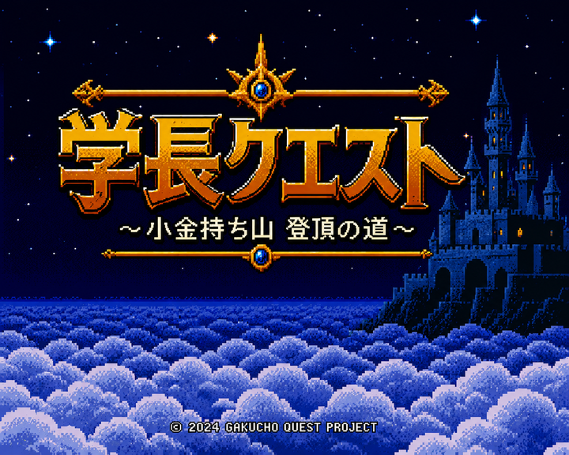

学長クエスト 〜小金持ち山 登頂の道〜
あそぶだけで、お金の「毒キノコ」を 見やぶる力が つくＲＰＧ。
- 🛡️ 守る力＝学長の言う “毒キノコ”（ぼったくり・リボ・ＦＸ…）を 見やぶる目が きたえられる
- 📚 お金の ５つの力（かせぐ・ためる・ふやす・まもる・つかう）も 学べる
- 💥 毒キノコを 見やぶって ぶっ飛ばせ！ めざせ 小金持ち山の さんちょう（資産5000万）
🎮 ゲームで あそぶスマホ・ＰＣ どちらもＯＫ
※ これは 両学長の「だれか リベ大のゲーム 作ってくれないかな」に応えた非公式のファン作品です。
リベ大・両学長とは 関係のない 個人制作で、公式の素材は使っていません。
作者：うっちーＰ